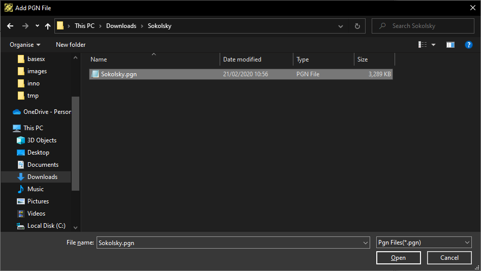
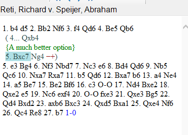

Getting Started
This article shows you how to get started using Grampus.
Installation
Download setup.exe for the latest release from Releases.
After runnning the setup, it will install the code in C:\Program Files\Grampus, install sample bases to Documents\Grampus\bases and create two Desktop Shortcuts.
The two applications are Grampus Batch used for long running processes on bases and Grampus for working with the games withing a base.
Create a new base
Open Grampus Batch using the shortcut. Then use Base -> New and create a new base called Sokolsky.

This will create a files in Documents\Grampus\bases: Sokolsky.grampus
Import a PGN
We will now import a PGN file with games for the Sokolsky opening.
We can use this link to download a file:
https://www.pgnmentor.com/openings/Sokolsky.zip
Once downloaded, unzip to extract the pgn file.
Now use Tools -> Add PGN file and select the downloaded file.

Now create a tree using Tree -> Create. Accept the default settings.
Now create filters using Filters -> Create. Accept the default settings.
Finally confirm the details stored using Base -> Info.
This should be shown in the Log:
Now close Grampus Batch.
Load Game
Now load the 4th Game by double clicking or using the right click menu.
You can now review the moves and the tree updates to show alternative moves in the database and limits the list to those games that contain the position.
Thus, if you select move 3. f4 only 2 games are shown.

Using the Engine
We can now use the engine to analyse the game. If we go to move 4. Be5 and then press the Start button, we can see that Stockfish much prefers 4...Qxb4 to give Black a large advantage.

If we examine this further we can see that Stockfish has found the variation 4...Qxb4 5. Bxc7 Ng4. This threatens Qd4 winning, as it attacks the Rook and if you protect it there is mate on f2.
We can add this as a variation by playing the moves on the board. Stockfish find no good move, as, for example, 6. e3 can be answered by 6...Nxe3.
Adding Variations, Comments and Assessments
After adding the variation 4...Qxb4 5. Bxc7 Ng4, right click the move Qxb4 and use Add Comment After. Now enter "A much better option".
Now right click the move Ng4 and use Add NAG. Now chose -+, a decisive advantage for Black.

Now save the Game by using the Save button or menu Game->Save.
Adding ECO Classifiers
We can now add an ECO classification to all the games in the database.
Use the menu Tools->Set ECOs. This will add ECO classifiers to every game. In this case, they are nearly all variants of A00.

Now exit the application by using menu File->Exit.